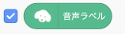

3. ティーエムツー・スクラッチで音声認識
1
学習データを読み込む
次はティーエムツー・スクラッチを使って音声認識をしてみましょう。 そのために、以下の手順で先程アップロードしたティーチャブルマシンの音声認識の学習データを読み込みます。
- 「音声分離モデルURL」ブロックをスクリプトエリア(画面中央の白い画面)に置きます
- 中に書いてあるアドレスを先ほどメモ帳アプリにコピーした音声認識の学習データのアドレスに置き換えます。最後の「/(スラッシュ)」までコピーしないと正しく動かないので注意してください。
- 「音声分離モデルURL」ブロックをクリックすると「緑の旗」ボタンが押された状態になるのでしばらく待ちます。読み込みが終わると「緑の旗」ボタンが元に戻ります。
- 「音声ラベル」変数ブロックの左側のチェックボックスにチェックを入れます。 
- ステージ(プログラムの実行画面)に認識された音声の名前が表示されるので「こんにちは」「さようなら」を認識するか確認します。

チャレンジ
ある画像が見つかると「〜の音声が聞こえた」演算ブロックが「真」になりますので、これを「もし〜なら」制御ブロックと組み合わせて使います。

それでは画像認識の時と同じ様にして「こんにちは」を認識したら「こんにちはだね」、「さようなら」を認識したら「さよならだね」、バックグラウンド・ノイズの時は「何も無いね」と猫に言わせてみましょう。